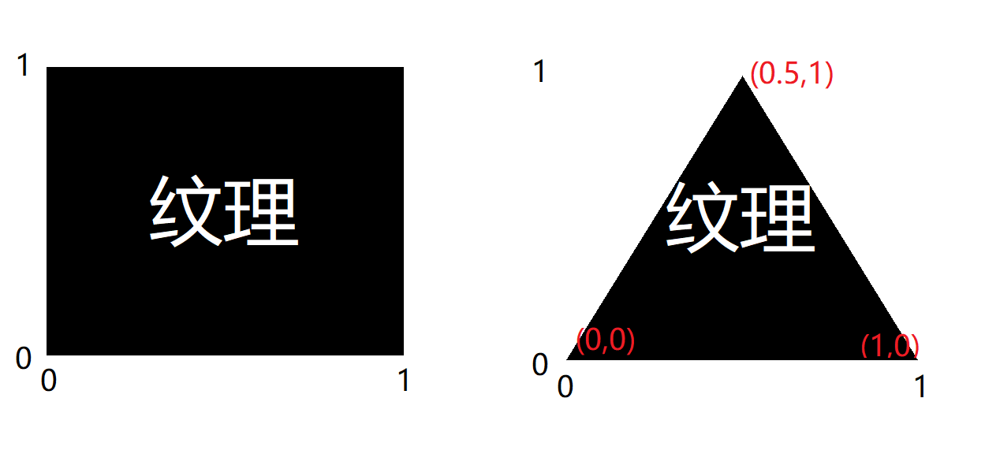
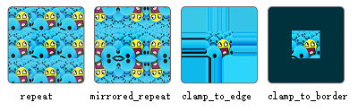
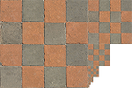
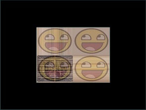

texture_t tx(const char* img_path,bool _use_alpha,int _unit=0);

如图，左边是一张完整纹理的坐标，可以看见： 右边是它贴在一个三角形上的样子，可以看到每个点都有一个纹理坐标，纹理上对应的位置就被贴在顶点上。texture_t tx("res/box.jpg",0)
tx.bind();
还需要改变一下顶点属性，以供存放纹理坐标：（预留了颜色属性）
3
3 3 2 // 位置（坐标） 颜色 纹理坐标
-0.5 -0.5 0 1 0 0 0 0
0.5 -0.5 0 0 1 0 1 0
0.5 0.5 0 0 0 1 1 1
-0.5 0.5 0 1 1 0 0 1
相应改变顶点着色器，接收顶点属性，并转发至片段着色器：
layout (location = 0) in vec3 v_pos;
layout (location = 1) in vec3 v_col;
layout (location = 2) in vec2 v_tex;
out vec3 tcol;
out vec2 ttex;
tcol=v_col;
ttex=v_tex;
并在片段着色器中接收：
in vec3 tcol;
in vec2 ttex;
然后在片段着色器中定义一个2D纹理（一定要是uniform）：
uniform sampler2D tex;
之后给输出颜色赋值：
fcol=texture(tex,ttex);
我们还能将纹理和顶点颜色混合：
fcol=texture(tex,ttex)*vec4(tcol,1.0f);
tx.bind(); 可以将它绑定到默认单元，还可以调用 tx.bind(int unit); 将它绑定到另一个单元。texture_t tx1("res/box.jpg",0,0);
texture_t tx2("res/face.png",1,1);
tx1.bind();
tx2.bind();
然后修改片段着色器，声明两个纹理并改变颜色赋值：
uniform sampler2D tex1;
uniform sampler2D tex2;
fcol=mix(
texture(tex1,ttex),
texture(tex2,ttex),
0.2
);
最后给 uniform 赋值为对应的单元：
sd.seti("tex1",0);
sd.seti("tex2",1);
完整代码 eg2gle 内。多种选项有不同的效果。
我们通过以下代码设置：tx.wrap(GLenum mode_s,GLenum mode_t);
两个参数分别是 S轴(X轴) 和 T轴(Y轴) 的环绕模式。gle.tex_clamp_to_border 的颜色：
tex_border_col(float r,float g,float b,float a);
tex_border_rgb(unsigned int _rgb);
tex_border_rgba(unsigned int _rgba);
使用方法同清屏函数。
tx.fil(GLenum mode_min,GLenum mode_mag);
其中，mode_min 代表纹理被缩小时的模式，mode_mag 代表纹理被放大时的模式。

多级渐远纹理会在创建纹理时自动生成。mode_min 指定以下的值：tex_fil_**，星号处为两个字母。p(pixel) 或 l(linear)，和上述的普通过滤模式一致。gle.tex_fil_ll
eg2 基础上，改变纹理坐标和环绕，实现以下效果，
然后试试其他的环绕方式。 ex3

eg2 基础上，尝试在矩形上只显示纹理图像的中间一部分，修改纹理坐标，达到能看见单个像素的效果。尝试让像素显示得更清晰。ex4 texture() 函数就是在纹理上找到对应像素的颜色。
texture_t tx(const char* img_path, bool _use_alpha, int _unit = 0);